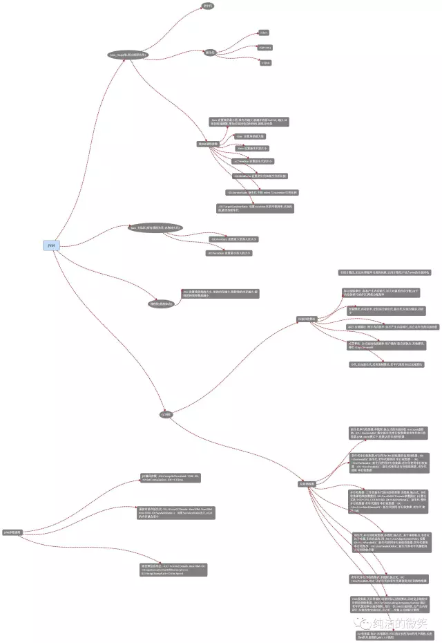
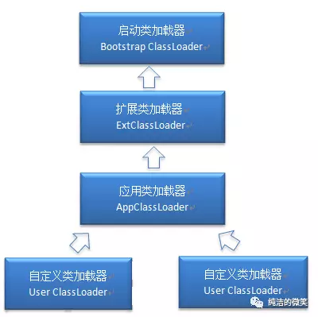
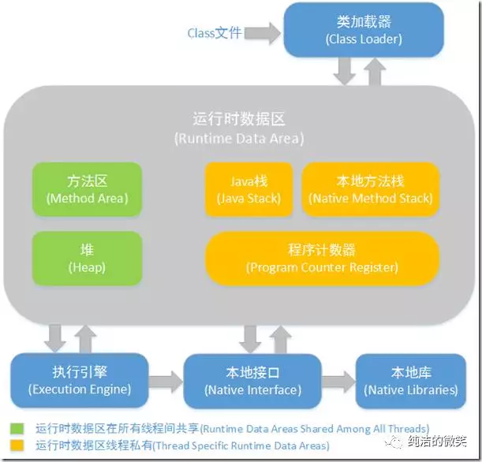
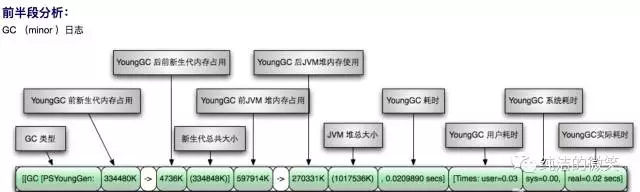

在江湖中要练就绝世武功必须内外兼备，精妙的招式和深厚的内功，武功的基础是内功。对于武功低（就像江南七怪）的人，招式更重要，因为他们不能靠内功直接去伤人，只能靠招式，利刃上优势来取胜了，但是练到高手之后，内功就更主要了。一个内功低的人招式在奇妙也打不过一个内功高的人。比如，你剑法再厉害，一剑刺过来，别人一掌打断你的剑，你还怎么使剑法，你一掌打到一个武功高的人身上，那人没什么事，却把你震伤了，你还怎么打。同样两者也是相辅相成的，内功深厚之后，原来普通的一招一式威力也会倍增。
对于搞开发的我们其实也是一样，现在流行的框架越来越多，封装的也越来越完善，各种框架可以搞定一切，几乎不用关注底层的实现，初级程序员只要熟悉基本的使用方法，便可以快速的开发上线；但对于高级程序员来讲，内功的修炼却越发的重要，比如算法、设计模式、底层原理等，只有把这些基础熟练之后，才能在开发过程中知其然知其所以然，出现问题时能快速定位到问题的本质。
对于Java程序员来讲，spring全家桶几乎可以搞定一切，spring全家桶便是精妙的招式，jvm就是内功心法很重要的一块，线上出现性能问题，jvm调优更是不可回避的问题。因此JVM基础知识对于高级程序员的重要性不必言语，我司在面试高级开发的时候，jvm相关知识也必定是考核的标准之一。本篇文章会根据之前写的jvm系列文章梳理出jvm需要关注的所有考察点。
jvm 总体梳理
jvm体系总体分四大块：
类的加载机制
jvm内存结构
GC算法 垃圾回收
GC分析 命令调优
当然这些知识点在之前的文章中都有详细的介绍，这里只做主干的梳理
这里画了一个思维导图，将所有的知识点进行了陈列，因为图比较大可以在公众号回复“jvm”进行查看。

类的加载机制
主要关注点：
什么是类的加载
类的加载指的是将类的.class文件中的二进制数据读入到内存中，将其放在运行时数据区的方法区内，然后在堆区创建一个java.lang.Class对象，用来封装类在方法区内的数据结构。类的加载的最终产品是位于堆区中的Class对象，Class对象封装了类在方法区内的数据结构，并且向Java程序员提供了访问方法区内的数据结构的接口。
类的生命周期
类的生命周期包括这几个部分，加载、连接、初始化、使用和卸载，其中前三部是类的加载的过程,如下图；
几个小问题？
1、JVM初始化步骤 ？ 2、类初始化时机 ？3、哪几种情况下，Java虚拟机将结束生命周期？
类加载器

启动类加载器：Bootstrap ClassLoader，负责加载存放在JDK\jre\lib(JDK代表JDK的安装目录，下同)下，或被-Xbootclasspath参数指定的路径中的，并且能被虚拟机识别的类库
扩展类加载器：Extension ClassLoader，该加载器由sun.misc.Launcher$ExtClassLoader实现，它负责加载DK\jre\lib\ext目录中，或者由java.ext.dirs系统变量指定的路径中的所有类库（如javax.*开头的类），开发者可以直接使用扩展类加载器。
应用程序类加载器：Application ClassLoader，该类加载器由sun.misc.Launcher$AppClassLoader来实现，它负责加载用户类路径（ClassPath）所指定的类，开发者可以直接使用该类加载器
类加载机制
全盘负责，当一个类加载器负责加载某个Class时，该Class所依赖的和引用的其他Class也将由该类加载器负责载入，除非显示使用另外一个类加载器来载入
父类委托，先让父类加载器试图加载该类，只有在父类加载器无法加载该类时才尝试从自己的类路径中加载该类
缓存机制，缓存机制将会保证所有加载过的Class都会被缓存，当程序中需要使用某个Class时，类加载器先从缓存区寻找该Class，只有缓存区不存在，系统才会读取该类对应的二进制数据，并将其转换成Class对象，存入缓存区。这就是为什么修改了Class后，必须重启JVM，程序的修改才会生效
jvm内存结构
主要关注点：
jvm内存结构

方法区和堆是所有线程共享的内存区域；而java栈、本地方法栈和程序计数器是运行是线程私有的内存区域。
Java堆（Heap）,是Java虚拟机所管理的内存中最大的一块。Java堆是被所有线程共享的一块内存区域，在虚拟机启动时创建。此内存区域的唯一目的就是存放对象实例，几乎所有的对象实例都在这里分配内存。
方法区（Method Area）,方法区（Method Area）与Java堆一样，是各个线程共享的内存区域，它用于存储已被虚拟机加载的类信息、常量、静态变量、即时编译器编译后的代码等数据。
程序计数器（Program Counter Register）,程序计数器（Program Counter Register）是一块较小的内存空间，它的作用可以看做是当前线程所执行的字节码的行号指示器。
JVM栈（JVM Stacks）,与程序计数器一样，Java虚拟机栈（Java Virtual Machine Stacks）也是线程私有的，它的生命周期与线程相同。虚拟机栈描述的是Java方法执行的内存模型：每个方法被执行的时候都会同时创建一个栈帧（Stack Frame）用于存储局部变量表、操作栈、动态链接、方法出口等信息。每一个方法被调用直至执行完成的过程，就对应着一个栈帧在虚拟机栈中从入栈到出栈的过程。
本地方法栈（Native Method Stacks）,本地方法栈（Native Method Stacks）与虚拟机栈所发挥的作用是非常相似的，其区别不过是虚拟机栈为虚拟机执行Java方法（也就是字节码）服务，而本地方法栈则是为虚拟机使用到的Native方法服务。
对象分配规则
对象优先分配在Eden区，如果Eden区没有足够的空间时，虚拟机执行一次Minor GC。
大对象直接进入老年代（大对象是指需要大量连续内存空间的对象）。这样做的目的是避免在Eden区和两个Survivor区之间发生大量的内存拷贝（新生代采用复制算法收集内存）。
长期存活的对象进入老年代。虚拟机为每个对象定义了一个年龄计数器，如果对象经过了1次Minor GC那么对象会进入Survivor区，之后每经过一次Minor GC那么对象的年龄加1，知道达到阀值对象进入老年区。
动态判断对象的年龄。如果Survivor区中相同年龄的所有对象大小的总和大于Survivor空间的一半，年龄大于或等于该年龄的对象可以直接进入老年代。
空间分配担保。每次进行Minor GC时，JVM会计算Survivor区移至老年区的对象的平均大小，如果这个值大于老年区的剩余值大小则进行一次Full GC，如果小于检查HandlePromotionFailure设置，如果true则只进行Monitor GC,如果false则进行Full GC。
GC算法 垃圾回收
主要关注点：
对象存活判断
判断对象是否存活一般有两种方式：
GC算法
GC最基础的算法有三种：标记 -清除算法、复制算法、标记-压缩算法，我们常用的垃圾回收器一般都采用分代收集算法。
标记 -清除算法，“标记-清除”（Mark-Sweep）算法，如它的名字一样，算法分为“标记”和“清除”两个阶段：首先标记出所有需要回收的对象，在标记完成后统一回收掉所有被标记的对象。
复制算法，“复制”（Copying）的收集算法，它将可用内存按容量划分为大小相等的两块，每次只使用其中的一块。当这一块的内存用完了，就将还存活着的对象复制到另外一块上面，然后再把已使用过的内存空间一次清理掉。
标记-压缩算法，标记过程仍然与“标记-清除”算法一样，但后续步骤不是直接对可回收对象进行清理，而是让所有存活的对象都向一端移动，然后直接清理掉端边界以外的内存
分代收集算法，“分代收集”（Generational Collection）算法，把Java堆分为新生代和老年代，这样就可以根据各个年代的特点采用最适当的收集算法。
垃圾回收器
Serial收集器，串行收集器是最古老，最稳定以及效率高的收集器，可能会产生较长的停顿，只使用一个线程去回收。
ParNew收集器，ParNew收集器其实就是Serial收集器的多线程版本。
Parallel收集器，Parallel Scavenge收集器类似ParNew收集器，Parallel收集器更关注系统的吞吐量。
Parallel Old 收集器，Parallel Old是Parallel Scavenge收集器的老年代版本，使用多线程和“标记－整理”算法
CMS收集器，CMS（Concurrent Mark Sweep）收集器是一种以获取最短回收停顿时间为目标的收集器。
G1收集器，G1 (Garbage-First)是一款面向服务器的垃圾收集器,主要针对配备多颗处理器及大容量内存的机器. 以极高概率满足GC停顿时间要求的同时,还具备高吞吐量性能特征
GC分析 命令调优
主要关注点：
GC日志分析
摘录GC日志一部分
Young GC回收日志:
2016-07-05T10:43:18.093+0800: 25.395: [GC [PSYoungGen: 274931K->10738K(274944K)] 371093K->147186K(450048K), 0.0668480 secs] [Times: user=0.17 sys=0.08, real=0.07 secs]
Full GC回收日志:
2016-07-05T10:43:18.160+0800: 25.462: [Full GC [PSYoungGen: 10738K->0K(274944K)] [ParOldGen: 136447K->140379K(302592K)] 147186K->140379K(577536K) [PSPermGen: 85411K->85376K(171008K)], 0.6763541 secs] [Times: user=1.75 sys=0.02, real=0.68 secs]
通过上面日志分析得出，PSYoungGen、ParOldGen、PSPermGen属于Parallel收集器。其中PSYoungGen表示gc回收前后年轻代的内
通过上面日志分析得出，PSYoungGen、ParOldGen、PSPermGen属于Parallel收集器。其中PSYoungGen表示gc回收前后年轻代的内存变化；ParOldGen表示gc回收前后老年代的内存变化；PSPermGen表示gc回收前后永久区的内存变化。young gc 主要是针对年轻代进行内存回收比较频繁，耗时短；full gc 会对整个堆内存进行回城，耗时长，因此一般尽量减少full gc的次数
Young GC日志:

Full GC日志:
调优命令
Sun JDK监控和故障处理命令有jps jstat jmap jhat jstack jinfo
jps，JVM Process Status Tool,显示指定系统内所有的HotSpot虚拟机进程。
jstat，JVM statistics Monitoring是用于监视虚拟机运行时状态信息的命令，它可以显示出虚拟机进程中的类装载、内存、垃圾收集、JIT编译等运行数据。
jmap，JVM Memory Map命令用于生成heap dump文件
jhat，JVM Heap Analysis Tool命令是与jmap搭配使用，用来分析jmap生成的dump，jhat内置了一个微型的HTTP/HTML服务器，生成dump的分析结果后，可以在浏览器中查看
jstack，用于生成java虚拟机当前时刻的线程快照。
jinfo，JVM Configuration info 这个命令作用是实时查看和调整虚拟机运行参数。
调优工具
常用调优工具分为两类,jdk自带监控工具：jconsole和jvisualvm，第三方有：MAT(Memory Analyzer Tool)、GChisto。
jconsole，Java Monitoring and Management Console是从java5开始，在JDK中自带的java监控和管理控制台，用于对JVM中内存，线程和类等的监控
jvisualvm，jdk自带全能工具，可以分析内存快照、线程快照；监控内存变化、GC变化等。
MAT，Memory Analyzer Tool，一个基于Eclipse的内存分析工具，是一个快速、功能丰富的Java heap分析工具，它可以帮助我们查找内存泄漏和减少内存消耗
GChisto，一款专业分析gc日志的工具